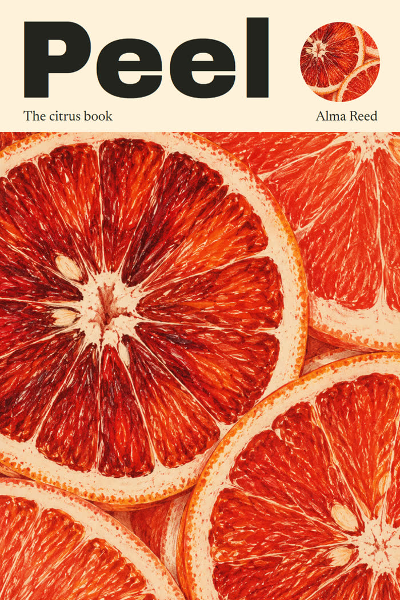

Intent
Start with what matters: the audience, the medium, the question. An uncertain impression is welcome.
“This should feel quieter.”
A creative skill for Codex and Claude, with a guided route for ChatGPT. Make an editable design, explore a direction together, or revise one part of an existing piece.
No required backend or account connection.
Optional local tools.

A study is something to react to.
Not a verdict.
01 / The workflow
Start with what matters: the audience, the medium, the question. An uncertain impression is welcome.
“This should feel quieter.”
Make a useful comparison, a visual fragment, or one editable artifact. Give the idea something to stand on.
“Show two different hierarchies.”
Look at the actual result. Notice what works, what feels unresolved, and which choice is worth exploring next.
“Keep this layout. Soften the type.”
Keep the source, the chosen direction and its scope. Leave a clear way back when the project changes.
“For this poster, use the first study.”
A question can be enough. So can one study.
Read the portable workflow
02 / In the work
Explore individual views, source files and editable projects from the retained studies.
Explore all studies → · Open Fieldwork → · Play Common Measure →
03 / A closer look
From intent to an editable result.
A retained walkthrough using the earlier studies.
04 / Begin here
No grand brief required.
Pick one uncertainty. Make one useful thing.
Set up Codex, ChatGPT or Claude. Use a project-local skill, a guidance ZIP or instructions pasted into chat.
In Codex use $ingenium; in Claude Code use /ingenium. For Claude chat, see downloads and enable it in Customize → Skills. ChatGPT setup depends on your workspace.
Start with the prompt here, open the editable files, then say what to keep and what to change.
Create an editable engineering overview titled Field Station, dated 18 April 2030, with the invitation “Review the revised system.” Show Sensor → Controller → Display.
Next: Change only the title treatment. Preserve the exact wording, date, invitation, component labels, and connection directions.
Capture a running local project, then compare the content and controls after a redesign. The basic creative skill works without this companion.
node bin/ingenium-tools.mjs inspect http://127.0.0.1:5173/ work/before
node bin/ingenium-tools.mjs inspect http://127.0.0.1:5173/ work/after --previous work/before/snapshot.jsonNode 22+, an existing Playwright/axe adapter and Chromium are required. Choose new evidence directories. Missing checks remain explicit.
Companion setup and inspection guideSVG renderer setupExperimental development build · Package declares private: true.
Portable package structure checked. Verify discovery in your client.
Desktop discovery unverified. Client installation routes vary.
05 / Useful boundaries
The workflow can begin with a question. Resources and local helpers join when they serve the task. Missing tools are reported honestly.
Editable originals, separate exports, scoped choices and relevant notices make the result easier to revise and reuse.
A render, a contrast result or a layout check can answer a narrow question. It cannot decide taste, acceptance or engineering adequacy.
Start with a question, an artifact, or the feeling
that something is almost right.